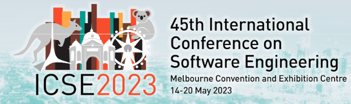
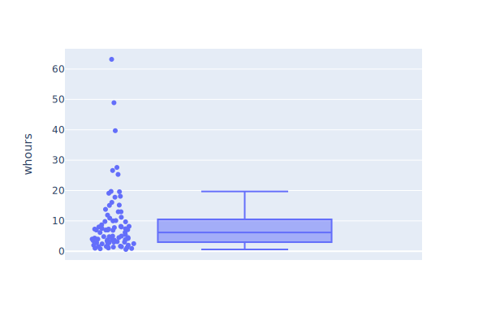
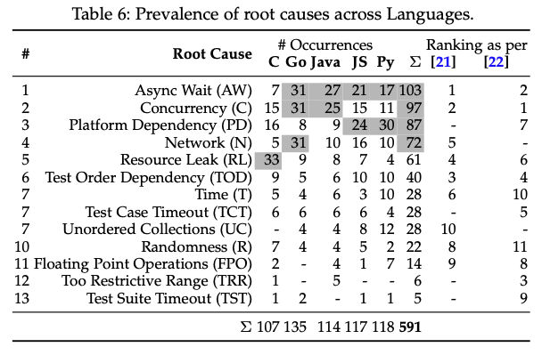
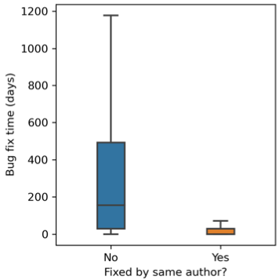
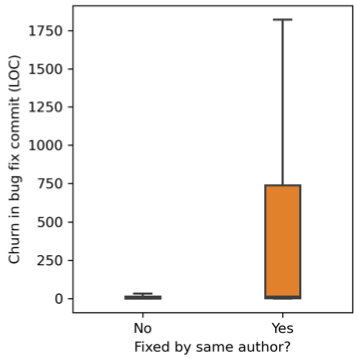
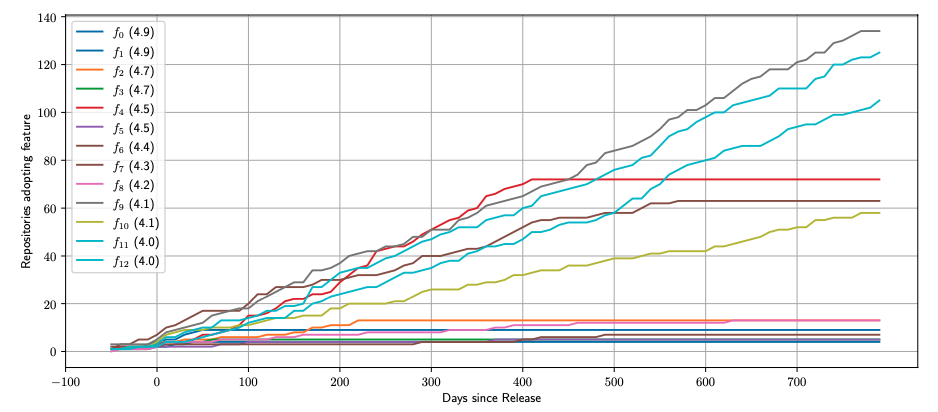
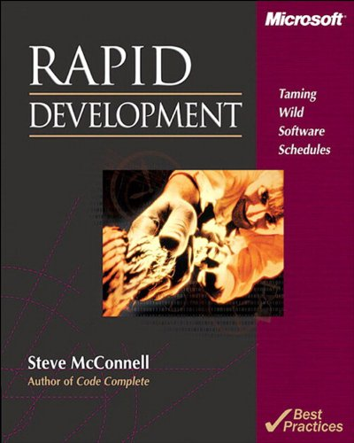
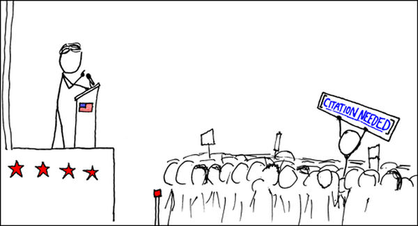

<div class="center"> <h1>Software Engineering's Greatest Hits</h1> <p><img src="../../files/talks/codebender-logo.svg" alt="Third Bit logo" width="20%" /></p> <p>Greg Wilson</p> <p><img src="../../files/talks/cc-by.svg" width="20%" alt="CC-BY" /></p> </div> --- ## In the Beginning - Seven Years' War (actually lasted nine years) - British lost 1512 sailors to enemy action… - …and almost 100,000 to scurvy --- ## Irony <div class="row"> <div class="col-6 center"> </div> <div class="col-6"> <ul> <li>James Lind (1716–94)</li> <li>1747: first controlled medical experiment</li> </ul> <table> <tr> <td>cider</td> <td>sea water</td> </tr> <tr> <td>vitriol</td> <td>vinegar</td> </tr> <tr> <td>barley water</td> <td>oranges</td> </tr> </table> </div> </div> - Those given oranges survived - Admiralty ignored the result until 1794 --- ## It Took a While - 1950: Hill & Doll publish a case-control study comparing smokers with non-smokers - Found that smoking causes lung cancer… - …and that many people would rather fail than change --- ## Is Software Engineering? - "The use of the scientific method to design novel things" - So… no --- ## Chickens and Eggs <img src="../../files/talks/blind-leading-blind.png" alt="The blind leading the blind" class="center"> - We know a lot about software and how it's built - But students aren't taught methods or results in school - And we're all too busy to learn them later --- ## We Can Do Better - Steady growth of empirical studies over 30 years - Fueled in part by data from open source projects - Many studies are small, and not all are well done - But we can refute some myths and reveal new insights  --- ## Are Some Languages Better? <a href="#Stefik2013">Stefik2013</a>: "An Empirical Investigation into Programming Language Syntax" - Measured how easily novices could read: - Perl - Quorum: the language their team is building - Randomo: syntax "designed" by rolling D&D dice - Perl is as hard for novices to learn as a language with a randomly-designed syntax --- ## Are Some Languages Better? - Second study - More subjects - Multiple assessment strategies - Languages in the C family are as hard for novices to learn to read as a randomly-designed language - Ruby and Python are significantly easier - <a href="https://quorumlanguage.com/">Quorum</a> is easier still --- ## Productivity - <a href="#Prechelt2000">Prechelt2000</a> had programmers implement the same thing in the language of their choice - How long did it take?  --- ## Productivity - Shortest and longest times were 0.6 and 63 hours - Ratio is 150X (!) - But people used 7 different languages - If we only look at Java, times are 3.8 vs. 63 hours (17X) - But comparing best and worst exaggerates differences - 90th percentile vs. 50th gives 3.7X --- ## Test-Driven Development <a href="#Shull2010">Shull2010</a>: "How Effective is Test-Driven Development?" > …evidence from controlled experiments suggests an > improvement in productivity when TDD is used. > However…pilot studies provide mixed evidence, some in > favor of and others against TDD. In the industrial > studies…evidence suggests that TDD yields worse > productivity. Even when considering only the more rigorous > studies…the evidence is equally split for and against a > positive effect. --- ## Test-Driven Development <a href="#Fucci2016">Fucci2016</a>: "An External Replication on the Effects of Test-driven Development Using a Multi-site Blind Analysis Approach" - Replication study, 39 professionals, real projects - No significant difference between test-first and test-last development - "The claimed benefits of TDD may…rather [be] due to the fact that [it] encourages fine-grained steady steps that improve focus and flow." > I practice TDD…and it works great. We don't need to prove that it works anymore. --- ## Nobody Knows Anything <a href="#Altadmri2016">Altadmri2016</a>: "37 Million Compilations: Investigating Novice Programming Mistakes in Large-Scale Student Data" - Ask educators for learners' most common mistakes - Compare their answers to empirical data - Weak consensus among educators - Weak correlation with observations - Educator experience had only weak impact on results --- ## Nobody Knows Anything Most common actual errors are: - Mis-matched parentheses (*not* confusing `=` with `==`) - Invoking methods with the wrong arguments - Reaching end of non-`void` method without `return` The three that take the most time to fix are: - Confusing short-circuit logical and bitwise operators - Using `==` instead of `.equals` to compare strings - Ignoring the return value from a non-void method --- ## A Caution <a href="#Begel2014">Begel2014</a>: "Analyze This! 145 Questions for Data Scientists in Software Engineering" - Ask a bunch of developers to propose questions, then ask another bunch to rate them - Developers want to know how people actually use their products - They *don't* want assessments of individual performance - Because they're afraid such measures will be weaponized --- ## Coding in the Dark <a href="#Hicks2022">Hicks2022</a>: "It's like coding in the dark: The need for learning cultures within coding teams" - …the work that code writers needed to do to understand code often did not feel like what was rewarded in the evaluation of their work - Despite stated ideals about knowledge sharing…this work was often contradicted with negative cues from colleagues about what was truly valued - This tension was exacerbated by code writers' fears about not looking like an engineer… - Code writers navigated this by divesting from their own learning and from the invisible work of knowledge transfer - [They] frequently expressed a poignant loneliness, even in highly resourced teams --- ## Open Source <a href="#Steinmacher2015">Steinmacher2015</a>: "Social Barriers Faced by Newcomers Placing Their First Contribution in Open Source Software Projects" - Identify 58 potential barriers - What matters most? 1. How easy it is to get set up to make a contribution 1. How easy it is to find a task to start with - Other work has also identified "how warmly first contribution was received" --- ## There Is No "Geek Gene" <a href="#Patitsas2016">Patitsas2016</a>: "Computer Science Grades Are Not Bimodal" - The "geek gene" is computing's most enduring and damaging myth - In fact, only 5.8% of course grade distributions at a large university were actually multi-modal - But CS faculty are more likely to see distributions as bimodal if they think they're from a CS class - Even *more* likely if they believe some students are innately predisposed to do well in CS --- ## Code Metrics - Lots of code metrics have been proposed - Halstead's measures - Cyclomatic complexity - Many object-oriented measures - But nothing works better than counting lines of code - <a href="#ElEmam2001">ElEmam2001</a>: "Confounding Effects of Class Size on the Validity of Object-Oriented Metrics" - <a href="#Herraiz2010">Herraiz2010</a>: "Beyond Lines of Code: Do We Need More Complexity Metrics?" --- ## Test Flakiness <a href="#Costa2022">Costa2022</a>: "Test Flakiness Across Programming Languages"  --- ## Who Fixes What? - Original authors fix their own simple bugs much faster than other people (<a href="#Zhu2021">Zhu2021</a>) - But are more likely to fix or change other things at the same time <div class="row"> <div class="col-6 center">  </div> <div class="col-6 center">  </div> </div> --- ## Language Features <div class="row"> <div class="col-12 center">  <br> From [<a href="#Scarsbrook2023">Scarsbrook2023</a>] </div> </div> - Nobody knows anything… --- ## Miscellaneous - Design patterns - Teaching people design patterns makes them better programmers (<a href="#Tichy2010">Tichy2010</a>) - Three experiments demonstrated cause and effect - This is *not* obvious - Maybe good programmers are just more likely to use patterns - Fuzz testing - Invented by accident in 1988 (<a href="#Miller2021">Miller2021</a>) - 25-33% of Unix utilities crashed when fuzzed - Thirty years later, "only" 12-20% still crash - [*The Fuzzing Book*](https://www.fuzzingbook.org/) --- ## Miscellaneous - Strong typing catches about 15% of bugs (<a href="#Gao2017">Gao2017</a>) - Which is a lot or a little depending on your point of view - Only 6-17% of configuration options are set by most users (<a href="#Xu2015">Xu2015</a>) - Only 2%-8% of parameters are configured by more than 90% of users - Secret management is a solved problem - But most developers don't know the solutions (<a href="#Basak2023">Basak2023</a>) - Protestware is on the rise (<a href="#Fan2024">Fan2024</a>) - Machine learning systems are bloated and vulnerable (<a href="#Zhang2024">Zhang2024</a>) - "Through experimentation with 15 machine learning containers from TensorFlow, PyTorch, and Nvidia, we show that bloat accounts for up to 80% of machine learning container sizes, increasing container provisioning times by up to 370% and exacerbating vulnerabilities by up to 99%." --- ## What Hasn't Worked? - People have tried explaining all of this before <div class="row"> <div class="col-3"></div> <div class="col-3"></div> <div class="col-3"><img src="../../files/talks/making-software.jpg" width="70%"></div> </div> <div class="center"> <a href="https://neverworkintheory.org/"><strong>https://neverworkintheory.org/</strong></a> </div> --- ## What Might? - Start with a little data science - Using software engineering datasets (because people learn best when examples are relevant) - And Python (because computer science students will probably already know it) - Academically defensible ("Look, math!") - And attractive to students - Then replicate a few simple results - At this point, students will be able to understand and assess the claims --- ## When We're Done **Assignment #3** > Given version control repositories for six software > projects, determine whether long functions are > more likely to be buggy than short ones. - Requires tool use, model building, and statistics - Require students to *do* science - So they *understand* it - So they *value* it --- ## Conclusions  - The world needs more of this - What are you waiting for? --- ## Thank You <div class="center"> <p><img src="../../files/talks/gvwilson.png" width="40%"></p> <p><a href="http://third-bit.com">Greg Wilson</a></p> <p><a href="mailto:gvwilson@third-bit.com">gvwilson@third-bit.com</a></p> <p><a href="http://third-bit.com/talks/greatest-hits/">http://third-bit.com/talks/greatest-hits/</a></p> <p><a href="./bibliography/">Bibliography</a></p> </div>